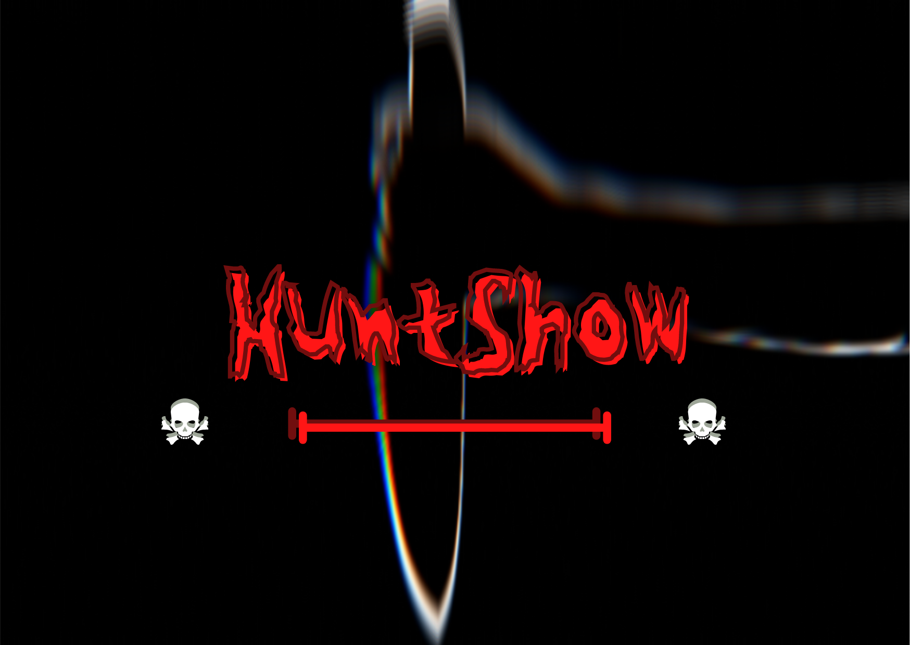

Mes créations :
Je suis une femme avec beaucoup d'imagination alors je crée. Voici mes créations des plus récentes au plus anciennes:

REVEILLE TOI ! est un jeu de plate-forme sur PC dans lequel on doit réveiller un jeune homme de 22 ans du nom de Nathan, plongé dans le coma . Nathan, schizophrène, vit avec une voix dans sa tête qu'il a nommé Nat. Avec son aide, Nathan compte bien tout faire pour enfin réussir à se réveiller. En rassemblant tous les morceaux de ses souvenirs dispersés dans son inconscient, il parviendra enfin à se réveiller
Voici huntshow :
C’est un jeu d’horreur , qui est un jeu de plateau dans lequel on répartit un maximum de 5 joueurs dans une ville abandonnée, des tueurs aux extrémités et une victime au centre. Le but ? Les tueurs doivent réussir à tuer la victime en premier avant que celle-ci ne s’échappe… mais il faut faire attention, la concurrence est rude. En effet le gagnant remportera la fantastique somme d’un million d’euros.
Et enfin Find Caroline et Choose :

Chacun de mes jeux utilisent la Loi de Murphy qui est la suivante : « S’il existe au moins deux façons de faire quelque chose et qu’au moins l’une de ces façons peut entraîner une catastrophe, il se trouvera forcément quelqu’un quelque part pour emprunter cette voie. » CHOOSE et FIND CAROLINE sont des jeux cinématographiques à choix multiples. Ici vous incarnerez un personnage avec un background douteux. Saurez vous faire les bons choix pour obtenir une fin heureuse ? Malheureusement, il n’existe pas de bonne fin, seulement la fin que vous aurez engendré.